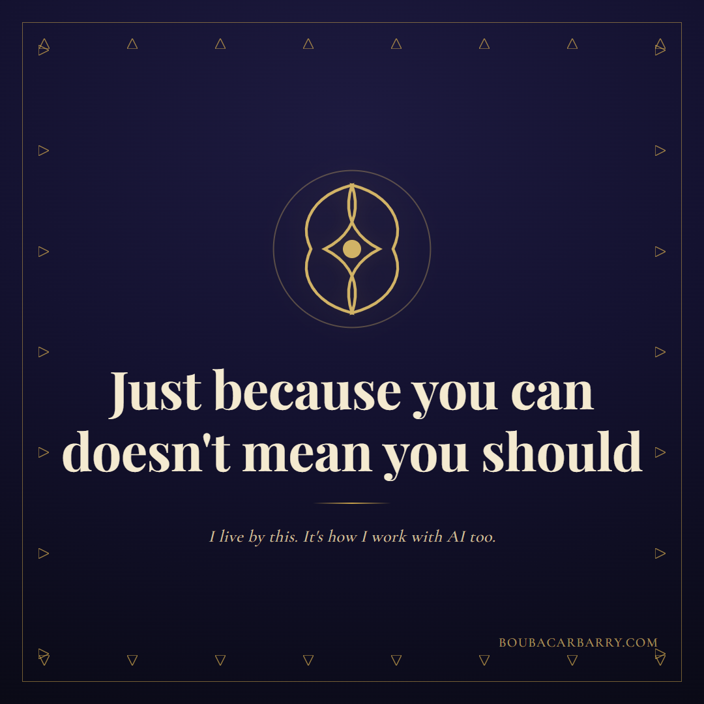
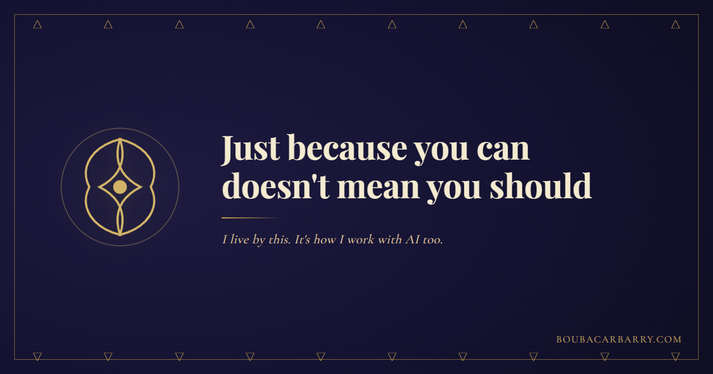
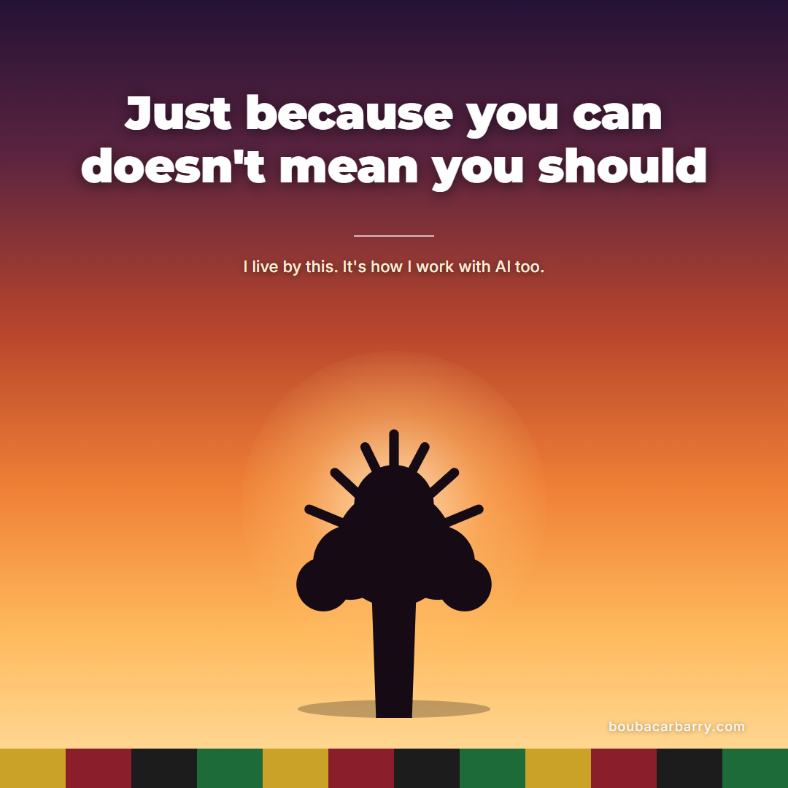
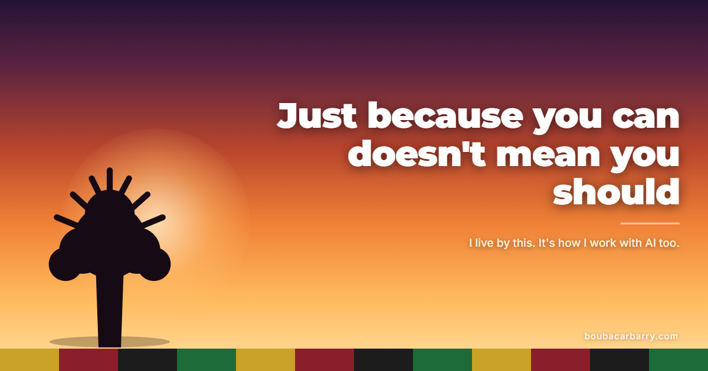
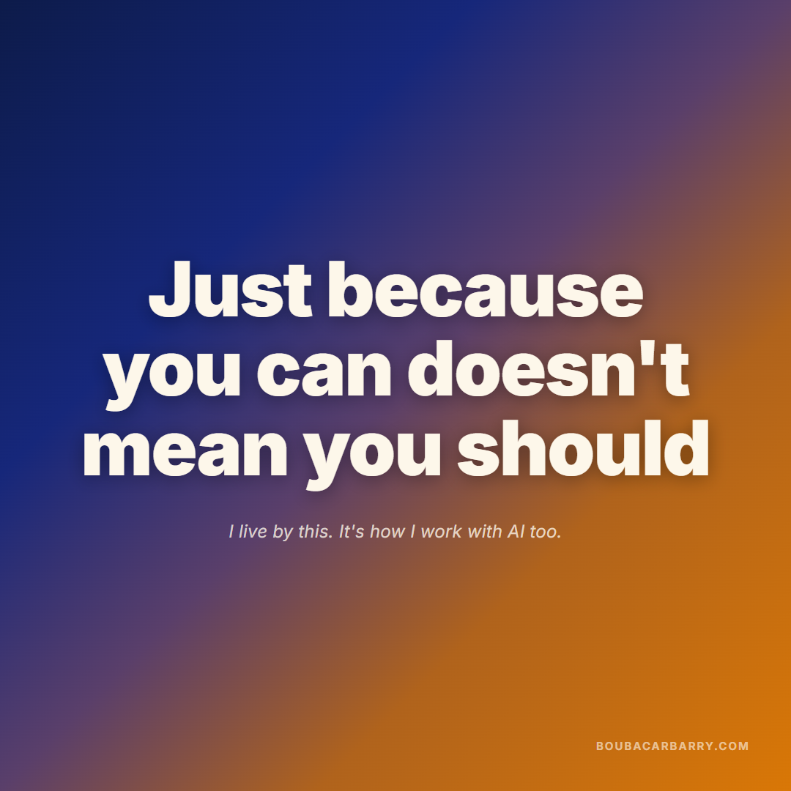
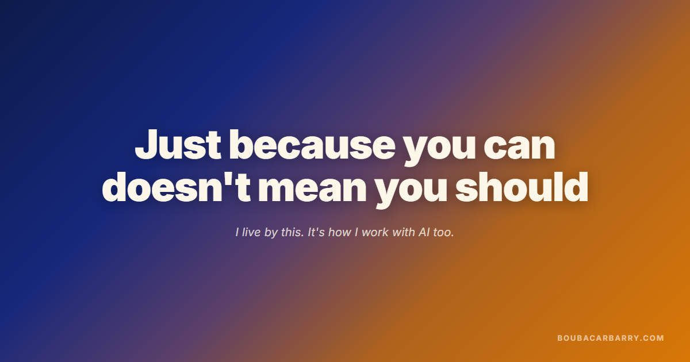

Quote poster review Just because you can doesn't mean you should
Three design directions, African art/design motifs, screensaver-quality. Each has a
square crop (mobile screensaver / Instagram-style share) and a landscape crop
(X / LinkedIn feed). This line isn't mine originally; it's commonly attributed elsewhere (quote-database
credit to Sherrilyn Kenyon, William C. Taylor's Practically Radical, and the pop-culture Jurassic
Park line). Boubacar has made the call to present it in first person, no quote marks, as a principle he
holds, not a citation.
Revised after his first-pass feedback — Concept C rebuilt, quote marks and third-person copy dropped everywhere
Concept A
Adinkra minimalist

Square / screensaver1080×1080

Landscape / feed1200×630
Color theory: warm-cool contrast, not a strict complementary pair. The gold line art (~45° hue) sits as
a single warm accent against a deep indigo field (~250° hue) that reads almost achromatic at this darkness —
the effect is closer to a spotlight than a color clash, which is what keeps a minimalist, ceremonial feel
instead of a loud one. A thin mud-cloth (Bogolan) triangle border frames the canvas without competing with
the symbol or the type.
Concept B
Baobab at dusk

Square / screensaver1080×1080

Landscape / feed1200×630
Color theory: an analogous warm gradient (deep violet to terracotta to gold, all neighboring on the
wheel) gives the sky a single continuous mood instead of competing hues, so the eye reads it as one dusk
moment rather than a designed palette. The baobab silhouette and kente strip stay pure near-black, which is
the actual contrast doing the work here: value contrast (near-black against saturated warm tones), not hue
contrast, keeps the tree and the type legible over a busy gradient.
Concept C — rebuilt after feedback
Complementary gradient, type-led
Original version had a Sankofa bird symbol and a literal CAN / SHOULD
split-screen — flagged as too busy and too on-the-nose. Both are gone. This version is one background field,
no central motif, no split labels, and the line itself is now the design: big, first person, no quote marks.

Square / screensaver1080×1080

Landscape / feed1200×630
Color theory (still explicitly applied, no longer literalized): the field is one continuous diagonal
gradient blending indigo/blue (~224° hue) into amber/orange (~32° hue) — a genuine complementary pair,
roughly 180° apart on the wheel, the highest-contrast relationship available. The earlier version stated that
tension as two flat halves with labels; this version dissolves it into a single gradient, so the contrast is
still real and still deliberate, it just isn't spelled out. Nothing else competes with the type.
On-image kicker line (all three concepts, voice-checked)
Small line under the big quote text. First person, his name doesn't
appear in it, appears once total on the design as a small watermark instead.
I live by this. It's how I work with AI too.
Suggested LinkedIn / X caption (voice-checked, ready to copy)
Just because you can doesn't mean you should.
I didn't coin that line. It shows up in quote collections, in Bill Taylor's book Practically Radical, and most people know it from Jurassic Park. I hold it anyway, as a working principle.
It's the test I run before I let AI touch anything. The tools can do almost whatever I point them at now. Capability was never the hard question. Whether it should happen is.